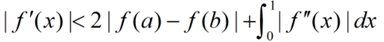
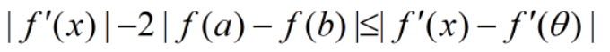
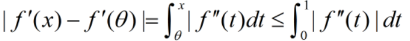

高等数学-一元函数积分学解题技巧(一)
本文最后更新于：10 个月前
引言
一元函数积分学是高等数学中最为基础且可拓展性非常强的一部分内容。其包含之前课程中的极限的原理和方法，定积分和不定积分的计算和方法，还承接着后面的多元函数微分学，甚至囊括了泰勒级数和傅里叶级数的一部分概念。因此作为一个承前启后的重要部分在考研数学所占的比重是非常大的，也是特别需要重视的一部分。
概述
一元函数积分学的相关试题可以出成选择填空题，或者大题。其中大题的分支一般较高，解题过程较为复杂，同时对于大题中的证明题更是结合了多个数学知识在其中。因此大题上拿到分值特别重要。笔者通过观看西安交通大学的相关的考研数学的网课，同时结合自己的一些学习笔记做了一点点基于自身水平的解题方法小结，来复习一下之前的学习内容，也和朋友们分享。
典例分析
不定积分的特性
例题1：设$f(x)$是$(0, + \infty )$内的连续函数，对于任意的正整数$a,b$，积分$\int_a^{ab} {f(x)dx} $与$a$无关，且$f(1)=1$，求$\int {f({e^x} + 1)dx} $。
解答思路点：
- 本题考虑的是定积分的特性，只有在积分式中，将$a$参数进行消除，才会使得该式与参数$a$无关，既然式中不含有参数$a$，则为了避免引入更多的变量或公式，可以直接对该式子对$a$进行求导，且导数值为0。可以即得出一个结论，一个函数若要申明与某个变量无关，则可以对这个函数求关于该变量的导数，且导数值为0。即$\frac{{d\int_a^{ab} {f(x)dx} }}{{da}} = 0$
- 对不定积分的求导方法；不定积分的求导可以假定其原函数，然后用原函数代入积分上下限得出积分表达式，后通过对积分表达式分别求导，即可得到求导公式：
$$ \frac{{d\int_a^{ab} {f(x)dx} }}{{da}} = \frac{{d(F(ab) - F(a))}}{{da}} = bf(ab) - f(a) = 0 $$
- 根据已知条件，结合到推导出的公式之中：由$f(1)=1$，将将$a=1$导入上式中，得到$bf(b) = 1 = > f(b) = \frac{1}{b}$。即能得到该函数表达式。之后只需根据题目要求计算该函数的定积分即可。
例题2：设$f(x),g(x)$在$[a, + \infty )$上有连续的导数。且$f’(x) \ge 0$，$\mathop {\lim }\limits_{x - > + \infty } f(x) = 0$，$g(x)$在$[a, + \infty )$上有界，证明：$\int_a^{ + \infty } {f(x)g’(x)dx} $收敛。
解题思路点：
- 函数收敛的定义：如果一个序列(函数看作连续序列)是有极限的，我们称这个数列收敛，否则称其为发散。[1]要证明该函数收敛，即证明该函数存在极限。
已知$f(x)$的极限和$g(x)$有界，而目标函数中包含$g'(x)$，需要将目标函数做一定的变换，去掉$g'(x)$，加上$f'(x)$，首先想到的即是采用分部积分法。
$$ \begin{array}{l} \int_a^{ + \infty } {f(x)g'(x)dx} = \mathop {\lim }\limits_{A - > \infty } \int_a^A {f(x)g'(x)dx} \\ = \mathop {\lim }\limits_{A - > \infty } (f(A)g(A) - f(a)g(a) - \int_a^A {f'(x)g(x)dx} ) \end{array} $$- $f(A)g(A)$等于0，$f(a)g(a)$为常数，即只需证明$\int_a^A {f'(x)g(x)dx} $收敛，由于$g(x)$有界，则可认为$|g(x)| \le M$，则
$$ \begin{array}{l} \frac{{\int_a^1 {f(x)dx} }}{{1 - a}} \le \frac{{\int_a^1 {f(x)dx} }}{{1 - a}} = f(a)\\ \int_a^A {f'(x)g(x)dx} \le \int_a^A {Mf'(x)dx} \\ \le M(f(A) - f(a)) \end{array} $$得证。
例题3：设$x \ge x,{f_0}(x) > 0$，若${f_n}(x) = \int_0^x {{f_{n - 1}}(t)dt} $，$n=1,2,3,...$，求证${f_n}(x) = \frac{1}{{(n - 1)!}}\int_0^x {{{(x - t)}^{n - 1}}{f_0}(t)dt} $。
解题思路点：
- 存在递推关系，因此可以用数学归纳法证明。数学归纳法[2]
2.考虑当$n=1$时：$$ {f_1}(x) = \int_0^x {{f_0}(t)dt} = \frac{1}{{0!}}\int_0^x {{{(x - t)}^0}{f_0}(t)dt} $$3. 当$n = n$时，成立，证明$n = n + 1$也成立。$$ \begin{array}{l} {f_{n + 1}}(x) = \int_0^x {{f_n}(t)dt} = \int_0^x {\frac{1}{{(n - 1)!}}\int_0^u {{{(u - t)}^{n - 1}}{f_0}(t)dt} du} \\ = \frac{1}{{n!}}\int_0^x {{{(x - u)}^n}{f_0}(u)du} \end{array} $$### 函数的大小关系 **例题4：**设函数$f(x),g(x)$在区间$[a,b]$上连续，且$f(x)$单调增加。$0
**例题5：**设函数$f(x)$在$[a,b]$上不恒为零，其导数连续，且$f(a)=0$.证明：存在$\xi \in {\rm{(}}a,b)$，使$|f'(\xi )| > \frac{1}{{{{(b - a)}^2}}}\int_a^b {f(x)dx} $。
解题思路点：
分析题意可得，该题与拉格朗日中值定理的表述极为类似，因此可以转化为拉格朗日中值定理[3]的形式进行求解。
该不等式左边为正数或零，右边则有三种情况：
- 右边为负：则不等式恒成立
- 右边为0：因为$f(x)$不恒为零。因此必存在$f'(\xi )$不等于0，则不等式成立。
- 右边为正：此时可以构造朗格朗日式：$f(\mu ) = \frac{1}{{b - a}}\int_a^b {f(x)dx} $，又因为
f(a)=0$，则$f(\mu ) = f(\mu ) - f(a) = \int_a^\mu {f'(x)dx}
右侧再次构造拉格朗日公式：
$$ \frac{{\int_a^\mu {f'(x)dx} }}{{b - a}} $$
则一定存在：
$$ f'(\xi ) = \frac{{\int_a^\mu {f'(x)dx} }}{{\mu - a}} = \frac{{f(\mu )}}{{\mu - a}} = \frac{1}{{(b - a)(\mu - a)}}\int_a^b {f(x)dx} $$
根据2.2得到$\mu < b$，因此左式大于右式。
例题6：设函数$f(x)$在$[a,b]$上有连续的导数，且$f(a)=0$，证明：$\int_a^b {{f^2}(x)dx} \le \frac{{{{(b - a)}^2}}}{2}\int_a^b {{{(f'(x))}^2}dx} $. **解题思路点：** 1. 该题题解需要使用到柯西-施瓦兹[4]不等式，该不等式数学符号表示如下所示：
- 证明：$f(x)$是以$ \pi $为周期的周期函数；
- 求函数f(x)的值域。
解题思路点：
要证明函数为周期函数，且其周期为$\pi$。即是证明：$f(x)=f(x+ \pi )$。将$u = t + \pi$代入原方程中，
$$ f(x) = \int_x^{x + \frac{\pi }{2}} {|\sin u|du} = \int_x^{x + \frac{\pi }{2}} {|\sin t|dt} $$计算函数的值域，即是计算函数在定义域的取值范围内函数的极值，又因为函数是以$\pi$为周期周期函数，因此只需要在$[0, \pi]$找出极大值和极小值点的函数值即可。
- 对$f(x)$求导得:
$$ f'(x) = |\sin (x + \frac{\pi }{2})| - |\sin x| = |\cos x| - |\sin x| $$
- 由题可知，该函数为分段函数，且存在两个极值点$\frac{\pi }{4}$和$\frac{{3\pi }}{4}$。计算这两点得函数值$f(\frac{{\pi }}{4})=-\sqrt 2 $，$f(\frac{{3\pi }}{4}) = \sqrt 2 $。即得函数得值域为：$[ 2 - \sqrt 2 ,\sqrt 2 ]$。
例题8：求$\mathop {\lim }\limits_{x - > + \infty } \frac{{\int_0^x {|\cos t|dt} }}{x}$
解题思路点：
- 同例题6，函数$f(x)={\int_0^x {|\cos t|dt} }$仍为周期为$\pi$的周期函数。因此可以将该不定积分拆分成为两个部分：
- 满足整数倍的周期函数值积分。
- 不满足整数倍的周期函数积分。
- 设$x=n \pi + k$，可以得到：
$$ f(x) = \int_0^{n\pi } {|\cos t|dt} + \int_{n\pi }^x {|\cos t|dt} $$
- 因为后一项远远小于前一项，因此可以只保留前一项，得到$f(X)=2n$，则原式变为：$\mathop {\lim }\limits_{n - > + \infty } \frac{{2n}}{{n\pi }} = \frac{2}{\pi }$
例题9：设函数$f(x)$在$[0,1]$上有二阶连续的导数，证明：对于任意的$a \in (0,\frac{1}{4})$和$b \in (\frac{3}{4},1)$，有：

解题思路点：
- 根据朗格朗日中值定理，存在
$$ \begin{array}{l} \theta \in (a,b)\\ 使得：|f(a) - f(b)| = |f'(\theta )||(a - b)| > \frac{1}{2}|f'(\theta )| \end{array} $$
- 由第一步可以得到：

而：

从而得证，不等式成立。
积分式子的变形和构造
例题10：设函数$f(x)$在$[0,+ \infty )$上有连续的导数，且$f(0)=0$，$|f(x)-f'(x)| \le 1$。证明：$|f(x)| \le e^x - 1$，$x \in [0, + \infty )$
解题思路点：
- 根据题目的已知条件发现题目给出的条件与需要证明的不等式之间的差距较大，因此需要对已知条件进行一系列的变形。已知$f(x)-f'(x)$，则可以构造$((e^{-x}f(x))' = e^{-x}(f'(x)-f(x))$
- 对第一步得到的积分式进行0到x的积分：
$$ \begin{array}{l} {e^{ - x}}f(x) = \int_0^x {{e^{ - t}}(f'(t) - f(t))dt} \\ |{e^{ - x}}f(x)| = \int_0^x {|{e^{ - t}}(f'(t) - f(t))|dt} \le \int_0^x {|{e^{ - t}}|dt} = 1 - {e^{ - x}} \end{array} $$得证。
例题11：设函数$f(x)$在$[a.b]$上连续，且
解题思路点：
- 一般零点个数计算一般是构造拉格朗日中值定理式，当原函数的被积函数存在三个零点时，即可通过拉格朗日中值定理证明原函数存在至少两个零点。因此可以通过构造原函数的被积函数证明题中结论。
- 令$F(x) = \int_a^x {f(t)dt} (a \le x \le b)$，则$F(a)=F(b)=0$。
- 对于后一道式子。采用分部积分法：
$$ \begin{array}{l} \int_a^b {f(x){e^x}dx} = \left. {F(x){e^x}} \right|_a^b - \int_a^b {F(x){e^x}dx} \\ = - \int_a^b {F(x){e^x}dx} = 0 \end{array} $$根据拉格朗日中值定理，必存在$c \in [a,b]$，使得$F(c){e^c}(b - a) = 0$，即找到第三个零点。得证。
例题12：设函数$f(x)$在$[0,1]$上可积，且当$0 \le x < y \le 1$时，$|f(x)-f(y)| \le |\arctan{X}-\arctan{y}|$，$f(1)=0$，证明：$|\int_0^1 {f(x)dx} | \le \frac{1}{2}\ln 2$.
解题思路点：
构造题中所给条件的表达式：
$$ \begin{array}{l} |\int_0^1 {f(x)dx} | = |\int_0^1 {(f(x) - f(1))dx} |\\ \le \int_0^1 {|\arctan x - \arctan 1|dx} \\ = \int_0^1 {(\frac{\pi }{4} - \arctan x)dx} \end{array} $$采用分部积分法，积分上式，计算结果：
例题13：设函数$f(x)$在$[0,1]$上单调减且连续
证明：对于任意$a \in (0,1)$，有$\int_0^a {f(x)dx} \ge a\int_0^1 {f(x)dx} $
解题思路点：
分析证明对象，可以看出需要证明函数在$(0,a)$区间内的平均大小，大于$(a, 1)$区间内的平均大小，由此可以分解表达式：
$$ a\int_0^1 {f(x)dx} = a\int_0^a {f(x)dx} + a\int_a^1 {f(x)dx} $$证明：$\frac{{\int_0^a {f(x)dx} }}{a} \ge \frac{{\int_a^1 {f(x)dx} }}{{1 - a}}$。
- 因为：$\begin{array}{l}
\frac{{\int_0^a {f(x)dx} }}{a} \ge \frac{{\int_0^a {f(a)dx} }}{a} = f(a)\\
\frac{{\int_a^1 {f(x)dx} }}{{1 - a}} \le \frac{{\int_a^1 {f(x)dx} }}{{1 - a}} = f(a)
\end{array}$
得证。
函数变上限构造和拉格朗日中值定理
例题14：设函数$f(x)$在$[a,b]$上单调增且连续。
证明：$\int_a^b {xf(x)dx} \ge \frac{{a + b}}{2}\int_a^b {f(x)dx} $
解题思路点：
- 构造差函数
- 对差函数进行求导即可得到差函数的变化规律：
- 拉格朗日中值定理得原始可变换为：
$x > c$，因此$F(x) \ge 0$得证
例题15：设函数$f(x),g(x)$在$[0,1]$上有连续的导数，且$f(0)=0$，$f’\left( x \right) \ge 0,g’(x) \ge {\rm{0}}$，证明：对于任意$a \in [0,1]$，有$\int_0^a {g(x)f’(x)dx} + \int_0^1 {g’(x)f(x)dx} \ge f(a)g(1)$
解题思路点：
构造变上限函数：
$$ F{\rm{(}}x) = \int_0^x {g(x)f'(x)dx} + \int_0^1 {g'(x)f(x)dx} - f(x)g(1) $$该构造函数在定义域上恒大于0，可以通过证明先证明函数值在定义域的上限上大于等于0，然后证明函数在定义域中是减函数。
将$x=1$代入该构造函数，得到
$$ \begin{array}{l} F(1) = \int_0^1 {g(x)f'(x)dx} + \int_0^1 {g'(x)f(x)dx} - f(1)g{\rm{(1)}}\\ {\rm{ = }}\left. {g(x)f(x)} \right|_0^1 - f(1)g(1) = 0 \end{array} $$将对构造函数求导，分析其单调性：
$$ \begin{array}{l} F'(x) = g(x)f'(x) - f'(x)g(1)\\ = f'(x)[g(x) - g(1)] 由于g'\left( x \right) \ge 0\\ 因此F'(x) \le 0 \end{array} $$得证。
例题16：设函数$f(x)$在$[ - \frac{1}{a},a]$上连续$(a>0)$,且$f(x) \ge 0$,$\int_{\frac{{ - 1}}{a}}^a {xf(x)dx} = 0$，证明：$\int_{\frac{{ - 1}}{a}}^a {xf(x)dx} \ge \int_{\frac{{ - 1}}{a}}^a {{x^2}f(x)dx} $ **解题思路点：** 1. 构造函数：
得证。